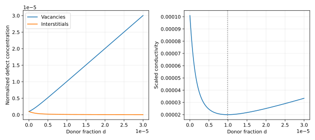

IIT Hyderabad · NPTEL · Independent study edition
Ionic solids, defect chemistry, and coupled charge transport
Adding divalent ions to a monovalent ionic crystal can increase vacancies while decreasing interstitials. Conductivity can initially fall even though one defect population rises. Understanding that behavior requires two separate constraints—mass action and charge neutrality—and a third distinction between moving matter and moving net charge.
Source spine: ionic defect chemistry and silver halides in L57, alkali halides and correlations in L58, and the ionic tutorial in L59. The explicit population solutions, minimum, and association model below are original derivations. Numerical inputs are synthetic; no garnet correlation value is transferred to a halide.
27.1 Effective charge is measured relative to a host site L57 00:20
An ionic crystal has chemically distinct cation and anion site sets. In a monovalent AB crystal, the perfect occupied cation site contributes charge \(+e\) and the anion site \(-e\), where \(e>0\) is elementary charge in coulombs. A cation vacancy has effective charge \(-e\) relative to an occupied cation site; an anion vacancy has effective charge \(+e\). These are missing-ion charges relative to the reference crystal, not charges of a material particle placed in the empty site.
A divalent cation replacing a monovalent cation has effective charge \(+e\). It can be compensated by one monovalent cation vacancy with effective charge \(-e\). Thus Ca on an Ag site is effectively+1 and an Ag vacancy−1 in units of \(e\). A claim that this substitution automatically creates a−2 vacancy confuses the host charge with the dopant's actual valence. A missing divalent host ion would be a different bookkeeping problem.
In Schottky disorder, cation and anion vacancies are produced in a charge- and stoichiometry-preserving combination, with the removed formula unit accommodated at a reservoir such as a surface. In cation Frenkel disorder, a cation leaves its regular site and occupies an interstitial site, producing an oppositely charged vacancy–interstitial pair. Anion Frenkel disorder is defined analogously. Crystal structures differ in coordination and available sites; a particular material's dominant disorder cannot be deduced from charge balance alone.
Let \(N_s\) be the number of regular cation sites per volume, in m⁻³. We normalize defect number densities by this common reference: \(v=n_V/N_s\), \(i=n_I/N_s\), and dopant concentration \(d=n_D/N_s\). If the interstitial-site density differs from \(N_s\), \(i\) is not its occupied site fraction. The corresponding multiplicity factor belongs in the activity or equilibrium constant. Equal charged defect numbers need not mean equal occupancy fractions on different site sets.
27.2 Mass action fixes a product; neutrality fixes a difference L57 06:29
For ideal dilute cation Frenkel disorder at fixed temperature, write \(vi=K_F\), where dimensionless \(K_F>0\) includes the site-normalization convention. This mass-action product follows from a formation free energy. With no other charged species, neutrality gives \(v=i\), so each concentration is \(\sqrt{K_F}\). Neutrality alone cannot specify their common magnitude: it permits every equal positive pair.
Now add fully ionized divalent substitutional dopants at normalized concentration \(d\geq0\), neglecting association and electronic conduction. Positive interstitial and dopant charges balance negative vacancies, giving \(v-i=d\). Substituting \(i=K_F/v\) gives \(v^2-dv-K_F=0\). The physical positive solution is
\[v=\frac{d+\sqrt{d^2+4K_F}}2,\qquad i=\frac{K_F}{v}.\tag{27.1}\]The other quadratic root is negative and cannot be a population. When \(d\ll\sqrt{K_F}\), both populations remain near the intrinsic value. When \(d\gg\sqrt{K_F}\), \(v\approx d\) and \(i\approx K_F/d\). Doping increases vacancies while suppressing interstitials because the equilibrium product stays fixed. If both Schottky and Frenkel disorder or electronic carriers are important, additional mass-action relations and a fuller neutrality sum must be solved together.
Silver halides motivate the cation-Frenkel picture. An interstitial can jump directly between available sites or move by interstitialcy: an interstitial atom displaces a regular atom into another position, so the identity carrying the excess occupancy changes. Tracking the defect position alone does not track one labeled Ag atom. Collinear and noncollinear knock-on geometries can produce different tracer correlations. Vacancy and interstitialcy contributions can coexist, and the appropriate coefficients depend on material and conditions.
27.3 Doping can produce a conductivity minimum L57 20:55
Let \(\mu_v,\mu_i>0\) be magnitudes of electrical drift mobilities of vacancies and interstitials, in m²V⁻¹s⁻¹. In the independent dilute-carrier approximation, each monovalent population contributes positively to conductivity. With the common normalization above,
\[\sigma=eN_s(\mu_vv+\mu_ii)=eN_s\left(\mu_vv+\mu_iK_F/v\right).\tag{27.2}\]Here \(\sigma\) is in Sm⁻¹. Opposite carrier charges produce opposite drift directions and therefore positive contributions to the same conventional current. At fixed temperature suppose mobilities do not change with dopant concentration. Since \(v\) increases monotonically with \(d\), differentiate with respect to \(v\). The minimum satisfies \(\mu_v-\mu_iK_F/v^2=0\), hence
\[v_{\min}=\sqrt{\mu_iK_F/\mu_v},\quad i_{\min}=\sqrt{\mu_vK_F/\mu_i},\quad d_{\min}=v_{\min}-i_{\min}.\tag{27.3}\]At that point the vacancy and interstitial conductivity contributions are equal. For nonnegative divalent doping the minimum is accessible only if \(\mu_i\geq\mu_v\); equality places it at zero doping. If interstitials are much faster, initial suppression of that population outweighs the growing vacancy contribution. At larger doping, the vacancy term eventually dominates. Association, changing mobilities, nonideal activities, or electronic conduction can shift or remove this ideal minimum.
The synthetic laboratory takes \(K_F=10^{-12}\) and mobility ratio100, reporting conductivity in units \(eN_s\mu_v\). Initially \(v=i=10^{-6}\) and scaled conductivity is \(1.01\times10^{-4}\). The minimum occurs at \(d=9.9\times10^{-6}\), with \(v=10^{-5},i=10^{-7}\) and scaled conductivity \(2\times10^{-5}\). These are algebraic teaching inputs, not measured AgCl concentrations or mobilities.

27.4 Schottky intrinsic and extrinsic slopes differ L58 00:20
For a monovalent alkali-halide model with equal cation and anion site densities, let \(v_c,v_a\) be their vacancy fractions. Ideal Schottky mass action gives \(v_cv_a=K_S\). Without other charges, \(v_c=v_a=\sqrt{K_S}\). If \(K_S=K_{S0}e^{-H_S/(RT)}\), where \(H_S\) is molar formation enthalpy of a vacancy pair, each isolated vacancy population contains a factor \(e^{-H_S/(2RT)}\).
Suppose a cation tracer channel is proportional to \(v_c e^{-H_m/(RT)}\), where \(H_m\) is its migration enthalpy and prefactors and correlations are treated as temperature independent. Its intrinsic Arrhenius enthalpy is \(H_S/2+H_m\). With divalent doping strong enough to fix the free cation vacancy population near \(d\), the extrinsic slope is approximately \(H_m\). The anion vacancy population is simultaneously suppressed to \(K_S/d\); doping one carrier does not leave the counterpart unchanged.
Association can invalidate the free-vacancy plateau at low temperature. Close to melting, additional mechanisms or vacancy pairs can matter. A neutral pair can be more abundant at higher temperature even though binding itself is favored at lower temperature: free vacancy formation supplies many more potential partners. In a dilute intrinsic estimate, pair concentration scales as \(K_av_cv_a=K_aK_S\). If \(K_a\propto e^{H_b/(RT)}\) with positive binding enthalpy \(H_b\), the product contains \(e^{-(H_S-H_b)/(RT)}\). For \(H_S>H_b\), absolute pair concentration rises with temperature despite decreasing association strength at fixed free populations.
An approximate intrinsic–extrinsic crossover occurs when \(\sqrt{K_S}\sim d\). With synthetic \(K_{S0}=1,H_S=200\)kJmol⁻¹ and \(d=10^{-4}\), equality gives1305.84K. This estimate neglects association, activity corrections, and phase changes. It is a model design calculation rather than a transition temperature assigned to a named salt.
27.5 Charge displacement includes cross-correlations L58 10:39
For independent dilute carriers of number density \(n\), charge \(q\), and particle diffusion coefficient \(D\), the Einstein relation between diffusion and electrical drift gives \(\mu=|q|D/(k_BT)\). Multiplying carrier number, charge magnitude, and drift mobility gives the Nernst–Einstein conductivity \(\sigma=nq^2D/(k_BT)\). Its units are Sm⁻¹. This result assumes the same independent motion underlies thermal spreading and linear electrical response.
For a measured partial conductivity \(\sigma_j\) attributed to one specified charge species, define a converted charge diffusivity \(D_j^\sigma=k_BT\sigma_j/(n_jq_j^2)\). Its ratio to tracer diffusion is the dimensionless Haven ratio \(H_{R,j}=D_j^*/D_j^\sigma\). Conductivity itself is not a diffusivity. Total ionic conductivity is a sum of partial contributions, but a single arbitrary \(n,q\) cannot convert every multivalent, multispecies total into a uniquely defined species coefficient.
The difference is visible in the equilibrium Einstein form for an isotropic three-dimensional system of volume \(V\):
\[\sigma=\lim_{t\to\infty}\frac{\left\langle\left|\sum_\alpha q_\alpha\Delta\mathbf r_\alpha(t)\right|^2\right\rangle}{6Vk_BTt}.\tag{27.4}\]The index \(\alpha\) runs over mobile charged particles, \(\Delta\mathbf r_\alpha\) is their unwrapped displacement, and brackets denote an equilibrium ensemble average. The formula assumes a well-defined stationary linear-response diffusive limit. Expanding the square produces same-particle terms and cross-particle terms. A tracer coefficient depends on a labeled particle's mean-square displacement; conductivity also depends on how different particles move together.
For a neutral bound pair whose opposite charges translate by the same displacement, their combined charge displacement cancels, even though both atoms move. Its neutral translation contributes to matter transport but not to net electrical current. Dissociation and reassociation can still change conductivity by changing free carriers and correlations. A vacancy representation requires consistent mapping from ionic motion; one must not add vacancy and ion charge displacement as if they were independent carriers describing the same exchanges.
A modern lattice-gas study makes the distinction explicit using single-particle factor \(f\) and collective factor \(f_I\): \(D^*=fD_0\), \(D^\sigma=f_ID_0\), hence \(H_R=f/f_I\). See Morgan, PDF pages3–4, Eqs.(1.1)–(1.6), published as Royal Society Open Science4,170824. The paper studies garnet geometry; its numerical factors are not halide measurements. Synthetic \(f=0.6,f_I=0.8\) give \(H_R=0.75\). For \(n=10^{27}\)m⁻³, \(T=600\)K, and \(D^\sigma=10^{-12}\)m²s⁻¹, the code computes \(\sigma=0.00309875\)Sm⁻¹ and \(D^*=7.5\times10^{-13}\)m²s⁻¹.
27.6 Association needs free and bound inventories L58 17:46
For an isolated aliovalent-dopant model, let \(d_0\) be total dopant fraction, \(u\) free positive dopants, \(v\) free negative compensating vacancies, and \(b\) neutral bound complexes, all using the same normalization. Neglect intrinsic defects. Neutrality gives \(u=v\); inventory gives \(d_0=u+b\); dilute association gives \(b=K_auv\). Eliminate \(b,v\) to obtain
\[u=v=\frac{2d_0}{1+\sqrt{1+4K_ad_0}},\qquad p_b=b/d_0=1-u/d_0.\tag{27.5}\]The rationalized form avoids subtracting two nearly equal numbers at weak association. Synthetic \(d_0=10^{-4},K_a=10^6\) gives \(v=9.51249\times10^{-6}\) and bound fraction0.904875. Free vacancies, not total vacancy inventory, supply an independent-carrier conductivity model. Bound complexes may migrate or dissociate; their occupancy alone is not a diffusivity.
Homovalent impurities can bind vacancies through elastic and polarization effects without a valence mismatch. Heterovalent impurities add an electrostatic contribution. A five-frequency model can distinguish exchange, rotation, association, dissociation, and distant-host rates, with vacancy return correlations as in Chapter23. Isotope effects also become contribution weighted when several channels transport a tracer; an observed intermediate isotope response does not uniquely determine the channel fractions without their individual responses.
The source's association formula illustrates a notation trap. A bounded degree \(p_b=b/(b+u)\) is different from association odds \(r=b/u\); they obey \(p_b=r/(1+r)\). If diffusivity is modeled as a full-occupancy value times occupancy, write \(D=D_{\mathrm{sat}}p_b=D_{\mathrm{sat}}r/(1+r)\). At \(r=1\), occupancy is one half; saturation requires \(r\to\infty\) or \(p_b\to1\). The L58 slide uses fraction terminology and the odds-shaped formula with inconsistent limiting language. We retain the distinction rather than copy that limit. For an original check with odds0.5 and1, the ratio \([r/(1+r)]_{0.5}/[r/(1+r)]_1=2/3\). These declared inputs are not a reconstruction of the tutorial's separate numerical comparison.
27.7 Laboratory, exercises, and worked solutions L59 11:35
The deterministic laboratory evaluates (27.1)–(27.5), checks the mass-action product and association inventory, and writes actual output. Its plotted conductivity is scaled and its correlation example is synthetic. Neither is a digitized halide dataset. These checks expose population and unit errors without substituting for material-specific measurements.
Charge compensation. How many monovalent cation vacancies compensate one divalent dopant on a monovalent cation site?
Solution
The substitution adds effective charge+1. A vacancy removes one host+1 ion and therefore contributes effective charge−1. One vacancy compensates one dopant. Assigning−2 to that vacancy would overcompensate and violate the stated reference-site bookkeeping. Other charged defects or electronic carriers can change which compensating species is thermodynamically favored, but not these individual effective charges.
Population constraints. Derive the strong-doping Frenkel limit and identify which equation fixes each feature.
Solution
Neutrality requires \(v-i=d\). For \(d\gg\sqrt{K_F}\), the positive solution gives \(v\approx d\). Mass action then fixes \(i=K_F/v\approx K_F/d\). Neutrality sets the vacancy excess; mass action sets the suppressed minority population. Neither relation alone gives both concentrations.
Minimum accessibility. What does the ideal Frenkel model predict when vacancy mobility exceeds interstitial mobility?
Solution
The unconstrained minimum has \(v_{\min}<\sqrt{K_F}\), hence negative \(d_{\min}\). Positive divalent doping only accesses \(v\geq\sqrt{K_F}\). The derivative in that domain is nonnegative, so conductivity rises from the intrinsic point. A minimum is not guaranteed by Frenkel disorder alone; its accessible location depends on mobility contrast.
Intrinsic/extrinsic slope. Under the fixed-prefactor assumptions, how can two temperature ranges of one salt have different activation enthalpies without different vacancy migration barriers?
Solution
Intrinsic vacancy concentration contributes formation factor \(e^{-H_S/(2RT)}\), giving total slope \(H_S/2+H_m\). In a dopant-controlled free-vacancy plateau, the population is approximately fixed, leaving slope \(H_m\). The migration barrier can be unchanged. Low-temperature association adds further population dependence and must be separated from a genuine migration change.
Neutral translation. Two opposite monovalent ions in a permanently bound pair translate by the same vector. Compare tracer and charge displacements.
Solution
Each labeled ion has nonzero squared displacement. The pair's charge displacement is \(e\Delta\mathbf r-e\Delta\mathbf r=0\). In (27.4), negative cross terms cancel the positive individual terms. Adding independent-ion Nernst–Einstein contributions would miss that cancellation and overestimate conductivity for the permanently bound translation. Dissociation creates a different dynamical situation.
Association limits. Obtain weak- and strong-association limits of (27.5).
Solution
When \(K_ad_0\ll1\), expanding the square root gives \(u\approx d_0\) and \(b\approx K_ad_0^2\). When \(K_ad_0\gg1\), the quadratic balance gives \(u\approx\sqrt{d_0/K_a}\) and \(p_b\approx1-1/\sqrt{K_ad_0}\). Free carrier concentration falls while most dopants are bound. This says nothing by itself about how fast a complex migrates or dissociates.
Neutrality, equilibrium, and transport each supply a different part of the model. Their combination explains how more defects can coexist with less current and how atoms can move while their collective charge displacement cancels.
Python laboratory
Run code/ch27.py. Inputs and scientific limits are specified in the chapter and program.
Complete runnable source
"""Ideal Frenkel/Schottky chemistry and correlation teaching checks."""
from pathlib import Path
import json
import numpy as np
import matplotlib
import matplotlib.pyplot as plt
matplotlib.use("Agg")
matplotlib.rcParams["svg.hashsalt"] = "ch27"
ROOT = Path(__file__).resolve().parents[1]
kB, e = 1.380649e-23, 1.602176634e-19
def populations(d, K):
v = (d + np.sqrt(d * d + 4 * K)) / 2
return v, K / v
def main():
K, mobility_v, mobility_i = 1e-12, 1.0, 100.0
d = np.linspace(0, 3e-5, 301)
v, i = populations(d, K)
cond = mobility_v * v + mobility_i * i
v_min = np.sqrt(mobility_i * K / mobility_v)
i_min = K / v_min
d_min = v_min - i_min
assert abs(v_min * i_min - K) < 1e-25
# Association: total donor d0, free donor = free vacancy = x.
d0, Kass = 1e-4, 1e6
free = 2 * d0 / (1 + np.sqrt(1 + 4 * Kass * d0))
bound = d0 - free
assert abs(bound - Kass * free**2) < 1e-17
T, n, Dsigma, f, fI = 600.0, 1e27, 1e-12, 0.6, 0.8
sigma = n * e * e * Dsigma / (kB * T)
HR = f / fI
# Intrinsic/extrinsic crossover: sqrt(Ks)=d, Ks=exp(-Hs/RT).
R, Hs, dopant = 8.31446261815324, 200000.0, 1e-4
cross = -Hs / (2 * R * np.log(dopant))
out = {
"status": "synthetic ideal dilute defect chemistry",
"Frenkel": {
"K": K,
"intrinsic_v": float(np.sqrt(K)),
"minimum_d": float(d_min),
"minimum_v": float(v_min),
"minimum_i": float(i_min),
"minimum_sigma_scaled": float(2 * mobility_v * v_min),
"intrinsic_sigma_scaled": float(
(mobility_v + mobility_i) * np.sqrt(K)
),
"max_mass_action_error": float(np.max(abs(v * i - K))),
},
"association": {
"total_dopant": d0,
"K": Kass,
"free_vacancy": float(free),
"bound_fraction": float(bound / d0),
},
"correlations": {
"f": f,
"f_I": fI,
"Haven_ratio": HR,
"sigma_S_m": sigma,
"D_tracer_m2_s": HR * Dsigma,
},
"Schottky_crossover_K": float(cross),
"association_odds_example": {
"p1": 0.5,
"p2": 1.0,
"fraction1": 1 / 3,
"fraction2": 0.5,
"ratio": 2 / 3,
},
}
fig, axes = plt.subplots(1, 2, figsize=(9, 4))
axes[0].plot(d, v, label="Vacancies")
axes[0].plot(d, i, label="Interstitials")
axes[0].set(
xlabel="Donor fraction d", ylabel="Normalized defect concentration"
)
axes[0].legend()
axes[1].plot(d, cond)
axes[1].axvline(d_min, color="gray", linestyle=":")
axes[1].set(xlabel="Donor fraction d", ylabel="Scaled conductivity")
for ax in axes:
ax.grid(alpha=0.25)
fig.tight_layout()
fig.savefig(ROOT / "assets/ch27-minimum.svg", metadata={"Date": None})
plt.close(fig)
(ROOT / "code/ch27-output.json").write_text(
json.dumps(out, indent=2) + "\n"
)
print(json.dumps(out, indent=2))
if __name__ == "__main__":
main()
Recorded execution output
{
"status": "synthetic ideal dilute defect chemistry",
"Frenkel": {
"K": 1e-12,
"intrinsic_v": 1e-06,
"minimum_d": 9.9e-06,
"minimum_v": 1e-05,
"minimum_i": 1e-07,
"minimum_sigma_scaled": 2e-05,
"intrinsic_sigma_scaled": 0.000101,
"max_mass_action_error": 2.0194839173657902e-28
},
"association": {
"total_dopant": 0.0001,
"K": 1000000.0,
"free_vacancy": 9.512492197250393e-06,
"bound_fraction": 0.9048750780274961
},
"correlations": {
"f": 0.6,
"f_I": 0.8,
"Haven_ratio": 0.7499999999999999,
"sigma_S_m": 0.003098747963862852,
"D_tracer_m2_s": 7.499999999999998e-13
},
"Schottky_crossover_K": 1305.8405030141166,
"association_odds_example": {
"p1": 0.5,
"p2": 1.0,
"fraction1": 0.3333333333333333,
"fraction2": 0.5,
"ratio": 0.6666666666666666
}
}